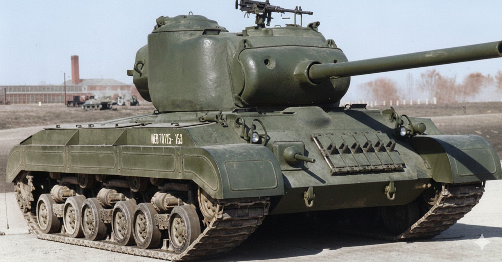

T25 Medium Tank
Призначення: дослідний середній танк для відпрацювання встановлення 90-мм гармати. Країна: США. Роки виробництва: 1944. Експлуатація: тільки випробування. Кількість: 42 шт. Озброєння: 90-мм гармата T7, 2 × 7,62-мм кулемети Browning. Броня: до 76 мм. Маневреність: 48 км/год, двигун Ford GAF. Екіпаж: 5 осіб. Суть у бою: проміжний етап у створенні танка T26 (будучий Pershing). Танк отримав потужну зброю, але його бронювання вважалося недостатнім для середнього танка нового покоління. Відомі битви: у бойових діях участі не брав. Цікава особливість: став однією з перших американських машин, де серйозно розглядалося використання 90-мм гармати для боротьби з важкими німецькими "Тиграми". Модифікації: T25: базова модель з горизонтальною підвіскою HVSS (аналогічно пізнім Шерманам). T25E1: модифікація з торсіонною підвіскою та іншим компонуванням моторного відділення. Саме на цій базі згодом виросте T26E3 Pershing.
